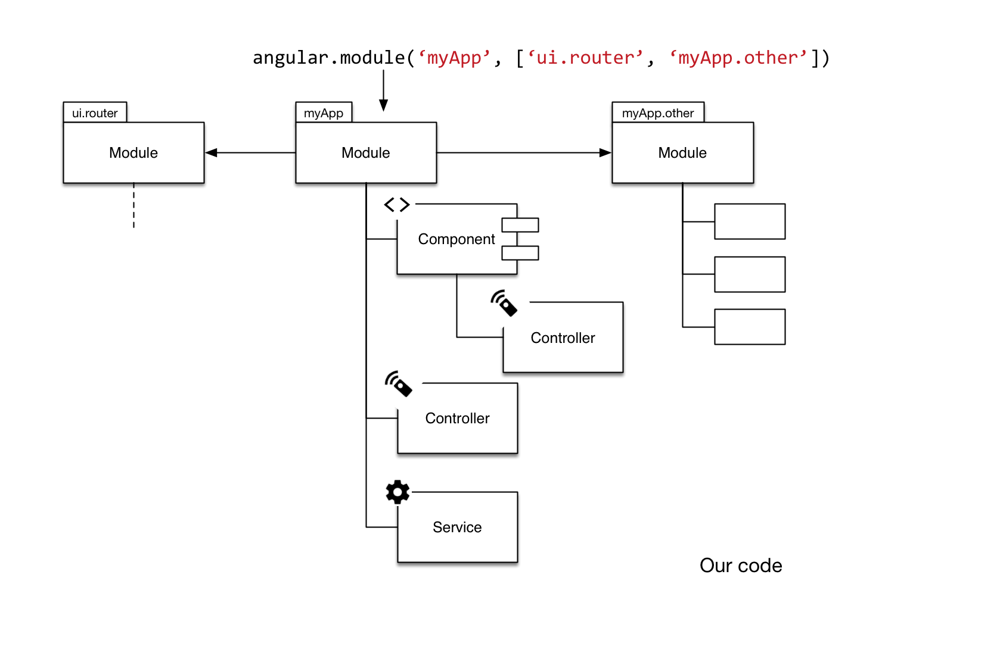
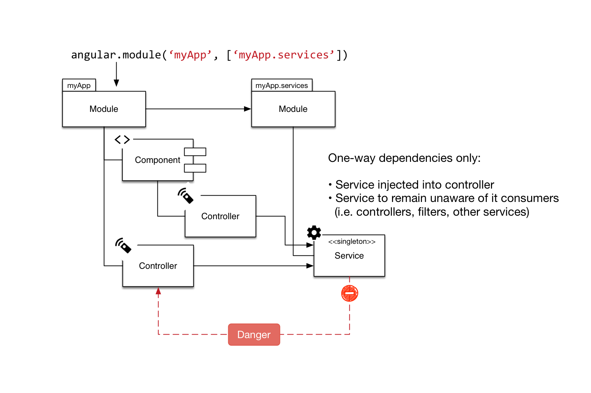

<html>

<head>
    <link rel="stylesheet" href="bower_components/reveal-js/css/reveal.css">
    <link rel="stylesheet" href="bower_components/reveal-js/css/theme/night.css">
    <link rel="stylesheet" href="css/styles.css">
</head>

<body>
    <div class="reveal">
        <div class="slides">
            <section data-markdown="markdown/intro.md"></section>
            <!--<section>
                
            </section>
            <section>
                
            </section>-->
            <section data-markdown="markdown/bindings.md"></section>
            <section data-markdown="markdown/input-bindings.md"></section>
            <section data-markdown="markdown/output-bindings.md"></section>
            <section data-markdown="markdown/two-way-bindings.md"></section>
            <section data-markdown="markdown/routing.md"></section>
            <section data-markdown="markdown/ui-router.md"></section>
            <section data-markdown="markdown/change-state.md"></section>
            <section data-markdown="markdown/state-params.md"></section>
            <section data-markdown="markdown/route-data.md"></section>
            <section data-markdown="markdown/filters.md"></section>
            <section data-markdown="markdown/available-filters.md"></section>
        </div>
    </div>
    <script src="bower_components/reveal-js/lib/js/head.min.js"></script>
    <script src="bower_components/reveal-js/js/reveal.js"></script>
    <script>
        Reveal.initialize({
            dependencies: [{
                src: 'bower_components/reveal-js/lib/js/classList.js',
                condition: function() {
                    return !document.body.classList;
                }
            }, {
                src: 'bower_components/reveal-js/plugin/markdown/marked.js',
                condition: function() {
                    return !!document.querySelector('[data-markdown]');
                }
            }, {
                src: 'bower_components/reveal-js/plugin/markdown/markdown.js',
                condition: function() {
                    return !!document.querySelector('[data-markdown]');
                }
            }, {
                src: 'bower_components/reveal-js/plugin/highlight/highlight.js',
                async: true,
                callback: function() {
                    hljs.initHighlightingOnLoad();
                }
            }, {
                src: 'bower_components/reveal-js/plugin/zoom-js/zoom.js',
                async: true
            }, {
                src: 'bower_components/reveal-js/plugin/notes/notes.js',
                async: true
            }]
        });
        // Reveal.configure({
        //     backgroundTransition: 'concave'
        // });
    </script>
</body>

</html>